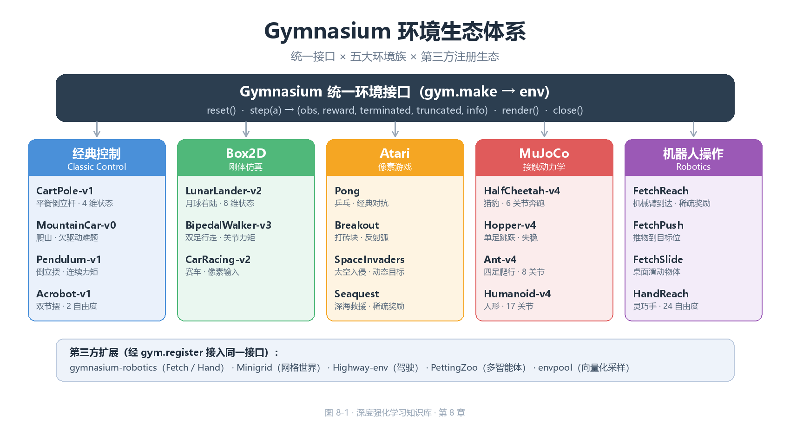
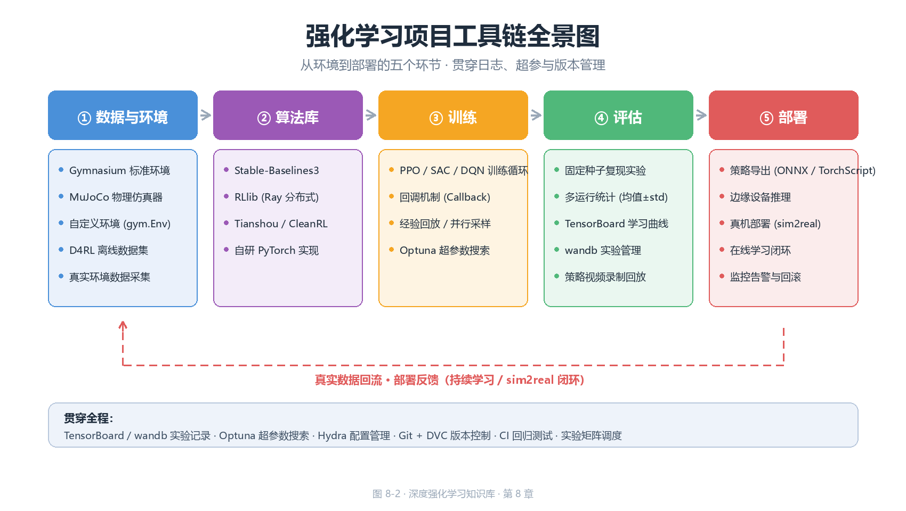

环境与工具链（Environments & Toolchains）
前八章的理论与算法——从 Q-Learning、DQN 到 PPO、SAC——全部围绕一个抽象 对象展开：环境（environment）。环境定义状态空间 \(\mathcal{S}\)、动作空间 \(\mathcal{A}\)、转移函数 \(P\) 与奖励 \(R\)，也是算法性能的裁判。理论章节 可以手写转移矩阵，但进入深度 RL 实战后，环境必须标准化：否则每个 研究者各写一套
step/reset，算法无法跨实验复用，结果无法互相比较。 本章回答四个工程问题：① 环境接口如何用（Gymnasium 生态）；② 有哪些 基准环境、难度与用途（经典环境图谱）；③ 物理仿真（MuJoCo）与算法库 （Stable-Baselines3、RLlib）如何使用；④ 如何自定义环境、规范评估记录、 以及整条工具链的选型。本章是连接"算法原理"与"实验工程"的桥梁。全文 代码遵循本书惯例：标注"若已安装"的示例依赖第三方库（未安装也可阅读）； 其余代码均为纯 Python 3 + NumPy 实现，可直接运行。
一、Gymnasium 生态：环境接口的工业标准
1.1 从 OpenAI Gym 到 Gymnasium
Gym 于 2016 年由 OpenAI 发布，是最早将"环境即接口"理念产品化的库。 2021 年 OpenAI 停止维护，项目移交社区组织 Farama Foundation 并更名为 Gymnasium；2022 年 10 月发布的 Gymnasium 0.26 引入了自 0.21 以来 最大的一次 API 破坏性变更。理解这段历史有助于读懂网上大量旧代码：
| 版本 | 时间 | step 返回 |
reset 返回 |
主要变化 |
|---|---|---|---|---|
| Gym 0.21 | 2021 | obs, reward, done, info |
obs |
经典四元组，done 混合语义 |
| Gymnasium 0.26 | 2022.10 | obs, reward, terminated, truncated, info |
obs, info |
拆分终止/截断；reset 增加 seed 参数 |
| Gymnasium 0.29 | 2023 | 同上 | obs, info |
render_mode 移入构造参数，env.render() 不再传参 |
| Gymnasium 1.0 | 2024 | 同上 | obs, info |
稳定版；移除大量 deprecated 接口 |
为什么要把 done 拆成 terminated 与 truncated？ 这是 Gymnasium 最
重要的设计决策。旧版 done=True 混淆了两种语义完全不同的终止：
- 终止（terminated）：回合因环境本身结束（杆倒、出界、通关）。 此时 MDP 真的走到终点，TD 目标中不应出现 \(V(s')\) 项（没有未来）。
- 截断（truncated）：回合因外部限制结束——步数超过
max_episode_steps（CartPole 默认 500 步）、人为中断。此时 \(s'\) 仍是 合法中间状态，TD 目标中应当保留自举项 \(\gamma V(s')\)。
把两者混在 done 里会导致系统性偏差：若把 500 步截断当作终止，价值函数
会把"能活到 500 步"误判为"游戏结束"，\(V(s)\) 被低估、策略满足于维持
500 步而非学到真正的最优平衡。
核心思想：
terminated是环境的语义属性（MDP 终点），truncated是实验的工程属性（预算耗尽）。二者必须分开传递，算法才能正确地决定 何时自举（bootstrap）、何时清零。所有现代算法（PPO、SAC、DQN 的 Gymnasium 版）都在 TD 目标里按terminated而非done决定是否清零。
1.2 Env 核心 API：reset / step / render / close
Gymnasium 的环境约定本质上只有五个方法。一个对象只要实现了这五个方法 （或其中子集），就可以被任何 Gymnasium 兼容的算法直接驱动：
| 方法 | 签名 | 返回 | 语义 |
|---|---|---|---|
reset |
reset(seed=None, options=None) |
(obs, info) |
重置环境到初始状态；seed 控制随机源，options 可传初始条件 |
step |
step(action) |
(obs, reward, terminated, truncated, info) |
执行一个动作，推进一个时间步 |
render |
render() |
np.ndarray 或 None |
返回 RGB 像素数组（render_mode="rgb_array" 时） |
close |
close() |
None | 释放渲染窗口等资源 |
action_space |
属性 | Space 子类 |
动作空间定义 |
observation_space |
属性 | Space 子类 |
观测空间定义 |
标准交互循环如下（这是全书所有算法"挂到环境上"的统一入口）：
┌────────────────────────────────────────────────────────────┐
│ Gymnasium 标准交互循环 │
│ │
│ obs, info = env.reset(seed=0) │
│ terminated = truncated = False │
│ total_reward = 0.0 │
│ while not (terminated or truncated): │
│ action = policy(obs) # 算法给出动作 │
│ obs, reward, terminated, # 环境推进一个时间步 │
│ truncated, info = env.step(action) │
│ total_reward += reward │
│ env.close() │
└────────────────────────────────────────────────────────────┘
info 是字典，可携带任意调试信息（Atari 的 lives、LunarLander 的
distance、机器人的 is_success 等）；协议约定：info 不得携带
影响学习的数据，算法默认忽略它。
reset 的 options 参数允许"可控初始化"（让 Pendulum 从指定角度开始、
让 HalfCheetah 以指定速度起跑），对课程学习与评估协议（见 7.3 节）至关
重要。seed 则保证随机源可复现：同一实例多次 reset(seed=s) 得到相同
的初始状态序列。
1.3 observation_space 与 action_space：空间的类型系统
空间（Space）是 Gymnasium 对"状态/动作取值范围"的形式化描述。算法侧
依赖空间做三件事：① 构造网络输入/输出层（状态维度、动作个数、动作上下界）；
② 随机采样探索动作（space.sample()）；③ 校验动作合法性
（space.contains(a)）。常用的空间类型：
| Space 类 | 构造参数 | 语义 | 采样示例 | 典型环境 |
|---|---|---|---|---|
Box |
low, high, shape, dtype |
\(n\) 维连续有界区间 \([low, high]^n\) | 均匀随机向量 | CartPole 状态、Pendulum 力矩 |
Discrete |
n |
整数集合 \(\{0, 1, \dots, n-1\}\) | 均匀随机整数 | CartPole 动作（左/右） |
MultiDiscrete |
nvec |
多个独立离散维度的笛卡尔积 | 每维独立采样 | 多关节分段控制 |
MultiBinary |
n |
\(n\) 维 0/1 向量 | 伯努利采样 | 开关组合、消息传递 |
Dict |
spaces: dict |
异构命名子空间的组合 | 各子空间独立采样 | 机器人（视觉+关节状态） |
Tuple |
spaces: tuple |
异构子空间的序列组合 | 各子空间独立采样 | 多智能体联合观测 |
Graph |
节点/边空间 | 图结构观测 | — | 分子、组合优化 |
Text |
max_length |
定长字符序列 | 随机字符 | 语言交互环境 |
两个最常见的空间——Box 与 Discrete——有若干容易踩坑的细节：
Box默认dtype=np.float32。神经网络的权重通常也是 float32，但若你的 状态是 float64（如 MuJoCo 原始输出），需要显式转换，否则类型不匹配会 静默出错或报警告。Discrete(n)的范围是 \([0, n)\)，不包含 \(n\)。动作 \(n\) 本身是非法 动作，env.step(n)会抛异常。Box的low/high可以是标量（广播到所有维度）或与shape同形的 数组（每维上下界不同）。当上下界相等（low == high）时，该维度是 常量——MuJoCo 中许多"锁定关节"就是靠这个技巧实现的。
以下纯 NumPy 代码演示了空间语义（不依赖 gymnasium，可直接运行）：
# 演示 Gymnasium 空间的数学语义（纯 NumPy 实现，可运行）
import numpy as np
class BoxSpace:
"""连续有界空间 [low, high]^n，逐元素成立"""
def __init__(self, low, high, shape=None, dtype=np.float32):
self.low = np.broadcast_to(np.asarray(low, dtype=dtype), shape or np.shape(low))
self.high = np.broadcast_to(np.asarray(high, dtype=dtype), shape or np.shape(high))
self.shape = self.low.shape
self.dtype = dtype
def sample(self, rng=None):
rng = rng or np.random.default_rng()
u = rng.random(self.shape) # u ~ U[0,1) 再映射到 [low, high]
return (self.low + u * (self.high - self.low)).astype(self.dtype)
def contains(self, x):
x = np.asarray(x)
return x.shape == self.shape and np.all(x >= self.low) and np.all(x <= self.high)
class DiscreteSpace:
"""离散空间 {0, 1, ..., n-1}"""
def __init__(self, n):
self.n = n
self.shape = ()
def sample(self, rng=None):
rng = rng or np.random.default_rng()
return int(rng.integers(0, self.n))
def contains(self, x):
return isinstance(x, (int, np.integer)) and 0 <= x < self.n
# CartPole：状态 4 维连续有界区间，动作离散 2 个（左/右）
obs_space = BoxSpace(low=np.array([-4.8, -3.4, -0.42, -3.4]),
high=np.array([4.8, 3.4, 0.42, 3.4]))
act_space = DiscreteSpace(2)
rng = np.random.default_rng(0)
print("采样状态:", obs_space.sample(rng)) # 预期输出: 采样状态: [ 2.8397458 -1.189032 0.31652465 -0.48738542]
print("动作 1 合法:", act_space.contains(1)) # 预期输出: 动作 1 合法: True
print("动作 2 合法:", act_space.contains(2)) # 预期输出: 动作 2 合法: False
核心思想：空间的本质是协议的类型声明。算法只依赖
sample()（探索）与contains()（校验）两个操作，就能做到"不关心 环境内部实现"；这正是策略网络输入维度、输出层大小能从环境自动推导的 前提（SB3 的MlpPolicy就是读取observation_space/action_space自动建网的）。
1.4 gym.make 与注册表
gym.make(id) 是获取环境实例的统一入口，id 形如 "CartPole-v1"。
Gymnasium 内置约 1000 个环境（含 Atari 的全部变体），全部通过注册表
（registry）管理：每个条目包含 id、entry_point（工厂函数）、
max_episode_steps（时间限制）、reward_threshold（解算标准）等元数据。
# 若已安装 gymnasium（pip install gymnasium），以下代码可直接运行
import gymnasium as gym
# 创建环境：render_mode 在构造时指定（'human' 弹窗 / 'rgb_array' 返回像素）
env = gym.make("CartPole-v1", render_mode="rgb_array")
# 查看空间元信息 —— 算法据此自动构建网络
print("观测空间:", env.observation_space) # 预期输出: Box([-4.8 ...], [4.8 ...], (4,), float32)
print("动作空间:", env.action_space) # 预期输出: Discrete(2)
print("时间限制:", env.spec.max_episode_steps) # 预期输出: 500
# 标准交互
obs, info = env.reset(seed=42) # seed 固定随机源，保证可复现
total = 0.0
for _ in range(200):
action = env.action_space.sample() # 随机策略（探索基线）
obs, reward, terminated, truncated, info = env.step(action)
total += reward
if terminated or truncated:
break
print("随机策略一回合回报:", total) # 预期输出: 随机策略一回合回报: 20.0（数值有随机性）
env.close()
版本后缀的语义：CartPole-v1 的 -v1 表示该环境的第 2 个版本
（从 0 起编号）。版本升级通常意味着奖励函数、状态定义或动力学修正——
同一算法在不同版本上的绝对分数不可直接比较。论文复现时务必核对
环境 id 与版本号（这是 7.4 节可复现性 checklist 的第一项）。
id 命名遵循"名称-版本"约定，但少数环境带后缀修饰符：Atari 的
PongNoFrameskip-v4 中的 NoFrameskip 表示不做帧跳过（见 2.4 节），
-v4 是 ALE 的评估版本号。
1.5 Wrapper：装饰器模式与向量环境
Wrapper（包装器）是 Gymnasium 的扩展机制：它代理一个底层环境，在
reset/step 前后插入预处理逻辑。因为 API 不变，Wrapper 可以无限嵌套，
且对算法完全透明。
| Wrapper 类型 | 拦截点 | 典型用途 |
|---|---|---|
ObservationWrapper |
observation(obs) |
归一化、灰度化、裁剪、拼接帧 |
ActionWrapper |
action(a) |
动作缩放、离散化、夹取边界 |
RewardWrapper |
reward(r) |
奖励缩放、裁剪、塑形 |
TimeLimit |
step |
步数截断（返回 truncated=True） |
RecordVideo |
step |
周期录制策略视频 |
FrameStack |
reset/step |
堆叠最近 \(k\) 帧作为观测（Atari 标配） |
# 若已安装 gymnasium，展示 wrapper 组合
import gymnasium as gym
from gymnasium.wrappers import TimeLimit, RecordVideo
env = gym.make("CartPole-v1")
env = TimeLimit(env, max_episode_steps=200) # 把 500 步限制改为 200 步
env = RecordVideo(env, video_folder="./videos", episode_trigger=lambda i: i % 10 == 0)
obs, info = env.reset()
向量环境（Vector Env）：gymnasium.vector 提供 SyncVectorEnv /
AsyncVectorEnv，把 \(N\) 个环境实例打包成批量接口——一次 step 接受
\(N\) 个动作、返回 \(N\) 组结果。这是 PPO 等 on-policy 算法并行采样的标准
做法（见 5.5 节），也是 SB3 中 make_vec_env 的底层机制。
| 特性 | 单环境 | 向量环境 |
|---|---|---|
step 输入 |
1 个动作 | 长度为 \(N\) 的动作数组 |
reset 返回 |
(obs, info) |
(batch_obs, batch_info) |
| 单步吞吐 | 1 条转移 | \(N\) 条转移 |
| 典型用途 | 交互式调试 | 并行采样、批量训练 |
二、经典环境图谱：基准测试的坐标系
2.1 环境总表
深度强化学习的基准环境按复杂度大致分为四档：经典控制（低维连续状态）、 Box2D（刚体物理）、Atari（像素输入）、MuJoCo（多关节连续控制）。 下表给出本章涉及的核心环境一览（难度为经验性分级，★ 越多越难）：
| 环境 | 状态维度 | 状态类型 | 动作类型 | 难度 | 典型用途 |
|---|---|---|---|---|---|
| CartPole-v1 | 4 | 连续 | 离散(2) | ★ | 入门教学、算法调试 |
| MountainCar-v0 | 2 | 连续 | 离散(3) | ★★ | 稀疏奖励、欠驱动研究 |
| Pendulum-v1 | 3 | 连续 | 连续(1) | ★★ | 连续控制最小算例 |
| Acrobot-v1 | 6 | 连续 | 离散(3) | ★★ | 欠驱动多体系统 |
| LunarLander-v2 | 8 | 连续 | 离散(4) | ★★★ | 离散动作+稀疏奖励 |
| BipedalWalker-v3 | 24 | 连续 | 连续(4) | ★★★★ | 连续动作鲁棒性 |
| CarRacing-v2 | 96×96×3 | 像素 | 连续(3) | ★★★★★ | 视觉+连续控制 |
| Pong（Atari） | 210×160×3 | 像素 | 离散(6) | ★★★ | DQN 历史基准 |
| Breakout（Atari） | 同左 | 像素 | 离散(4) | ★★★ | 稀疏奖励、延迟奖励 |
| HalfCheetah-v4 | 17 | 连续 | 连续(6) | ★★★ | MuJoCo 默认基准 |
| Hopper-v4 | 11 | 连续 | 连续(3) | ★★★★ | 单腿平衡与跳跃 |
| Ant-v4 | 27 | 连续 | 连续(8) | ★★★★ | 四足运动 |
| Humanoid-v4 | 376 | 连续 | 连续(17) | ★★★★★ | 高维欠驱动控制 |
2.2 经典控制族：算法开发的标准试验台
经典控制族来自早期控制理论的经典问题，状态维度低（2~6 维）、单步仿真 快（微秒级）、奖励设计各异，是验证算法正确性的首选——任何新算法 都应先在 CartPole 上跑通再上复杂环境。
- CartPole-v1（倒立摆）：小车沿轨道移动，杆顶端铰接；动作只有
"左推/右推"；状态 \((x, \dot{x}, \theta, \dot{\theta})\)；每步 +1，倾角
超 15° 或出界即
terminated。定位：RL 的 "Hello World"，任何 算法的冒烟测试。 - MountainCar-v0（爬山车）：小车在谷底，推力不足以直接爬坡，必须 来回荡积累动能；状态仅位置与速度 2 维；经典奖励稀疏（到顶 +1，其余 0）。定位：稀疏奖励 + 欠驱动的最小模型，常用于演示 奖励塑形与课程学习。
- Pendulum-v1（倒立摆连续版）：单摆从任意角度摆起并保持竖直， 动作是连续力矩。定位：连续控制最小算例，DDPG/TD3/SAC 论文的 标准演示环境，一回合上限 200 步。
- Acrobot-v1（双节摆）：两节铰接摆，仅中间关节可施力，目标是把 末端甩过指定高度。定位：欠驱动多体系统的经典例子，考验长期规划。
| 环境 | 状态 | 动作 | 奖励结构 | 关键难点 |
|---|---|---|---|---|
| CartPole | 4 维连续 | 离散 2 | 每步 +1 | 几乎无难点（入门） |
| MountainCar | 2 维连续 | 离散 3 | 稀疏 +1 | 稀疏奖励、欠驱动 |
| Pendulum | 3 维连续 | 连续 1 | \(-(\theta^2 + 0.1\dot\theta^2 + 0.001a^2)\) | 连续动作 |
| Acrobot | 6 维连续 | 离散 3 | 到达 +1（稀疏） | 欠驱动、长时程 |
2.3 Box2D 族：刚体物理的入门仿真
Box2D 族用 Box2D 物理引擎模拟刚体世界，状态包含关节角、速度、接触等 信息，比经典控制更接近真实机器人，但比 MuJoCo 简单。
- LunarLander-v2（月球着陆器）：控制主引擎与两个侧向推进器，把 着陆器软着陆在两根旗杆之间。8 维连续状态 + 4 个离散动作。奖励含 距离项、速度惩罚与着陆成功/坠毁的 ±100。定位：离散动作 + 混合 奖励结构 + 稀疏成败判定的标准组合，是 DQN 变体对比的常用场地。
- BipedalWalker-v3（双足行走）：24 维状态（关节角、角速度、接触 传感器、地形扫描），4 维连续力矩动作，稀疏的 +300 终点奖励。定位： 连续控制的"中等难度"关卡，考验算法的稳定性与样本效率。
- CarRacing-v2（赛车）：96×96 像素输入，3 维连续动作（转向/油门/ 刹车），奖励基于赛道进度。定位：像素观测 + 连续动作的交叉场景， 同时考验视觉表征与连续控制，通常需要 CNN 策略。
2.4 Atari：像素观测与 DQN 的历史战场
Atari 2600 游戏经 Arcade Learning Environment（ALE）封装后，成为 视觉强化学习的事实标准。DQN（2015）正是在 Atari 上首次证明"同一套 算法 + 同一套超参数打 49 款游戏"。Atari 环境的工程细节对复现至关重要：
- 帧预处理：210×160×3 的原始画面被缩放到 84×84 灰度，再堆叠最近
4 帧作为观测（
FrameStack(4)），以编码速度信息。 - 帧跳过（frame skip）：动作每隔 \(k\) 帧重复一次（ALE 默认 4），
既加速仿真又平滑动作。
NoFrameskip变体关闭该机制，留给算法自己 控制动作频率。 - 动作重复与随机性：为缓解确定性环境下的过拟合，评估时常给动作
加 25% 的随机概率（
sticky actions）。 - 生命周期信息：
info["lives"]携带剩余生命数——许多算法在 "丢一条命"时提前结束回合（life loss as terminal），这是 DQN 系列 提升样本效率的经典 trick。
| 代表游戏 | 动作数 | 奖励特点 | 学习难度 |
|---|---|---|---|
| Pong | 6 | 密集、±1 每球 | 低（DQN 数月前即超越人类） |
| Breakout | 4 | 稀疏、+1 每砖、奖励延迟 | 中 |
| Seaquest | 18 | 稀疏、氧气倒计时 | 高 |
| Montezuma's Revenge | 18 | 极度稀疏、探索难 | 极高（探索研究标尺） |
核心思想：Atari 的价值在于把"感知"和"决策"耦合进同一个问题—— 算法必须从像素中自己学习表征。这也是为什么 Atari 分数成为衡量 算法"通用性"的标尺：同一套超参数打 57 款游戏的平均分（human-normalized score）是 DQN 以降所有论文的标配指标。
2.5 MuJoCo 连续控制基准
MuJoCo 环境族（见第三章）提供多关节机器人（猎豹、蚂蚁、人形等）的 连续控制任务，状态为关节角/角速度/接触等，动作是各关节力矩。由于 物理仿真精确且速度快，MuJoCo 是连续控制算法（DDPG/TD3/SAC/PPO） 论文的标准实验场，也是 Gymnasium 默认捆绑的连续控制族。
| 环境 | 关节数 | 状态维度 | 任务目标 |
|---|---|---|---|
| HalfCheetah | 6 | 17 | 向前奔跑（速度奖励） |
| Hopper | 3 | 11 | 单腿向前跳跃不跌倒 |
| Walker2d | 6 | 17 | 双足行走 |
| Ant | 8 | 27 | 四足爬行（含接触力） |
| Humanoid | 17 | 376 | 人形站立与行走（最难） |
2.6 环境选择的经验法则
| 你的目标 | 推荐环境 | 理由 |
|---|---|---|
| 验证算法正确性（冒烟测试） | CartPole-v1 | 秒级训练、结果稳定、可手算 |
| 调试代码 bug | CartPole / Pendulum | 状态可打印、单步可解释 |
| 连续控制算法对比 | HalfCheetah-v4 / Pendulum-v1 | 样本效率差异显著、社区基准丰富 |
| 稀疏奖励研究 | MountainCar / 部分 Atari | 天然稀疏，无需人为构造 |
| 视觉表征研究 | Atari（Pong/Breakout 起手） | 像素输入、社区预处理管线成熟 |
| 高维连续控制 | Humanoid / Ant | 考验算法稳定性与调参功力 |
| 工程演示/教学 | LunarLander | 状态-动作组合丰富、可玩性强 |
三、MuJoCo 与物理仿真
3.1 为什么 RL 研究常用 MuJoCo
MuJoCo（Multi-Joint dynamics with Contact）由 Rob Fergus 团队于 2015 年发布，2021 年被 DeepMind 收购后开源、2022 年起完全免费。它成为 RL 连续控制研究默认仿真器的原因可归结为四个"快、准、稳、可微"：
| 特性 | 说明 | 对 RL 的意义 |
|---|---|---|
| 速度快 | 单核即可达 10kHz 以上仿真频率（视模型复杂度） | 百万步实验数小时内完成 |
| 接触稳定 | 软接触模型 + 无穿透约束，数值鲁棒 | 长时间仿真不爆点、不发散 |
| 精确 | 广义坐标 + 解析动力学，可精确到关节力矩 | 奖励函数可依赖物理量（速度、能耗） |
| 可微 | 动力学对状态/动作可求导（mj_jac、自动微分） |
支持 model-based RL、可微策略搜索 |
| 跨平台 | Python/C/C++/MATLAB 绑定，Gymnasium 原生集成 | 与算法库零成本对接 |
一个常被低估的优势是确定性：MuJoCo 仿真本身无随机噪声，环境随机性
全部来自 reset 时对初始状态/目标位置的显式采样，这让"固定 seed 复现"
变得可靠（见 7.3 节）——同样的 seed 得到逐位一致的轨迹。
3.2 接触动力学（contact dynamics）
多关节机器人的核心物理现象是接触：脚与地面的摩擦、指尖与物体的 按压、关节限位碰撞。接触动力学是仿真器最难的部分，也是各仿真器拉开 差距的地方。MuJoCo 采用软接触模型（soft contact model）：
- 法向力由"穿透深度"（penetration depth）经罚函数产生——物体可轻微 互相嵌入，嵌入越深、法向力越大，从而避免刚体接触的数值不连续 （LCP/互补问题在部分构型下无解）。
- 切向力用椭圆摩擦锥近似库仑摩擦：\(\|\mathbf{f}_t\| \le \mu f_n\) （\(f_n\) 法向力、\(\mu\) 摩擦系数），让"打滑"与"咬合"平滑过渡。
- 求解器（
mjData.solver）可在迭代法（PGS）与牛顿法之间选择， 平衡精度与速度。
软接触模型示意（法向-切向分解）
法向力 f_n ∝ 穿透深度 + 阻尼
│
┌──────┴──────┐
│ 接触面 │ 切向力 f_t（摩擦锥内）
│ ◄───────► │ ‖f_t‖ ≤ μ·f_n
└─────────────┘
核心思想：接触是"非光滑"的——法向力在接触/分离瞬间跳变。RL 的 策略网络假设奖励函数对动作足够光滑才能稳定求梯度；MuJoCo 的软接触 模型正是通过罚函数把这种非光滑性"磨平"，让梯度信息能穿透接触事件 传播。这也是为什么很多在 MuJoCo 上训练好的策略直接搬到真实机器人上 会失效的原因之一：真实接触更硬、更不连续（sim2real 问题，见 3.6 节）。
3.3 软体（soft body）与可变形物体
经典仿真器擅长刚体（rigid body），但机器人操作研究中大量场景涉及 可变形物体：布料折叠、绳子打结、果冻抓取、软组织手术。MuJoCo 的 能力边界：
| 能力 | 刚体 | 软体（MuJoCo） | 专用软体仿真器 |
|---|---|---|---|
| 表示 | 有限个刚体 | 有限元网格（FEM）/ 粒子 | 连续介质力学 |
| 形变 | 无 | 可变形（flex 特性） |
高保真形变 |
| 仿真速度 | 极快 | 中等 | 慢 |
| RL 适用性 | 最广 | 研究中（如布料操作） | 样本效率低，少用 |
| 代表工具 | MuJoCo / PhysX | MuJoCo flex / SOFA | SOFA / Genesis |
MuJoCo 从 2.0 起支持有限元软体（通过 flex 声明），可模拟布料、果冻
等；但注意：软体仿真在 Gymnasium 的 MuJoCo 环境族中并不常用，
主流 RL 基准仍以刚体为主。若你的研究聚焦布料/软组织操作，通常需要
专门的软体仿真器（SOFA、Genesis）或带 GPU 加速的形变仿真。
3.4 MJCF 格式简介
MuJoCo 的模型用 MJCF（MuJoCo CoNtrol Format，XML）描述，这是它与 URDF（ROS 生态的机器人描述格式）最大的生态差异。一个最小 MJCF 模型：
<!-- 若已安装 mujoco（pip install mujoco），本模型可直接加载渲染 -->
<mujoco model="单摆">
<!-- 全局选项：重力、积分器 -->
<option gravity="0 0 -9.81" integrator="RK4"/>
<!-- 默认值：减少重复声明 -->
<default>
<geom type="capsule" rgba="0.6 0.6 0.6 1" mass="0.1"/>
<joint type="hinge" damping="0.05"/>
</default>
<!-- 世界坐标系下的静态物体 -->
<worldbody>
<light pos="0 0 4" dir="0 0 -1"/>
<geom name="ground" type="plane" size="5 5 0.1" rgba="0.9 0.9 0.9 1"/>
<!-- 一个刚体：通过 body 组织运动学树 -->
<body name="pendulum" pos="0 0 1">
<!-- joint 定义该 body 相对父级的自由度 -->
<joint name="hinge1" axis="0 1 0"/>
<geom name="rod" fromto="0 0 0 0 0 -0.5" type="capsule" size="0.02"/>
</body>
</worldbody>
<!-- 执行器：把控制信号映射为广义力 -->
<actuator>
<motor name="torque" joint="hinge1" gear="1"/>
</actuator>
</mujoco>
MJCF 的关键设计：body 构成运动学树（关节连接父子刚体），geom
定义碰撞与渲染形状，actuator 定义控制接口。MuJoCo 的 Python 绑定
（mujoco 包）提供 mujoco.MjModel.from_xml_path() 加载模型、
MjData 保存仿真状态，并支持把模型导出为 URDF（mj_exportURDF），
方便与 ROS 生态互通。
| 维度 | MJCF（MuJoCo） | URDF（ROS） |
|---|---|---|
| 设计目标 | 仿真性能与数值稳定 | 机器人描述与可视化 |
| 默认物理 | 内置软接触求解器 | 需外部物理引擎（Gazebo 等） |
| 执行器 | 原生支持 motor/cylinder 等 | 通常只描述关节，控制另配 |
| 接触参数 | 丰富的摩擦/阻尼/刚度选项 | 简略 |
| RL 生态 | Gymnasium 原生 | 需转换或适配层 |
3.5 MuJoCo 与其他仿真器的关系
"用哪个仿真器"是工程选型的第一个岔路口。主流选项对比：
| 仿真器 | 底层加速 | GPU 支持 | 可微 | 典型用途 | 与 RL 的集成 |
|---|---|---|---|---|---|
| MuJoCo | CPU 多核 | 有限（2.3+ 部分支持） | 是 | 连续控制基准、接触研究 | Gymnasium 原生 |
| Isaac Gym / Isaac Lab | PhysX | 原生 GPU 并行 | 部分 | 大规模并行训练（数千环境） | 自研/Isaac Lab 框架 |
| Brax | JAX | 原生 GPU/TPU | 是 | 大规模并行 + 可微 RL 研究 | 自研（JAX 生态） |
| PyBullet | Bullet | 无 | 否 | 机器人抓取、教学 | gym 兼容包装 |
| PhysX | 多引擎 | 原生 | 否 | 游戏/视觉仿真 | 需自封装 |
| Genesis | 多后端 | 原生 | 是 | 通用机器人仿真（新） | 自研 |
| SAPIEN | PhysX | 是 | 部分 | 可交互关节物体、具身智能 | 自研 |
选型判断：单机、标准基准、算法对比 → MuJoCo；需要并行数千环境 加速样本采集 → Isaac Gym / Brax；可微物理用于 model-based RL → Brax / MuJoCo（可微模式）；真实机器人验证前的快速原型 → PyBullet （生态成熟、文档多）。
3.6 仿真到现实（sim2real）
仿真器再精确也是近似。策略从仿真迁移到真实系统（sim2real）的核心 挑战是域差距（domain gap）：真实接触更硬、执行器有延迟、传感器 有噪声。三条主流工程路线：
| 路线 | 思想 | 典型手段 | 成本 |
|---|---|---|---|
| 域随机化（domain randomization） | 训练时随机化物理参数，让策略学会"不变性" | 随机摩擦/质量/延迟/光照 | 低，训练时开销小 |
| 系统辨识（system identification） | 先精确标定仿真参数，使仿真逼近真实 | 参数估计、在线自适应 | 中，需真实数据 |
| 课程学习（curriculum） | 从易到难渐进训练，最后阶段贴近真实分布 | 噪声注入、扰动课程 | 低 |
核心思想：sim2real 的本质是把"仿真与真实的差距"当作另一种 分布偏移来对待。域随机化的哲学是"与其精确建模，不如让策略在参数 分布上稳健"——这与第 7 章 SAC 的最大熵思想同构：对不确定性建模， 而不是消除不确定性。
四、Stable-Baselines3：开箱即用的算法库
4.1 安装
Stable-Baselines3（SB3）是深度 RL 领域最流行的 PyTorch 算法库：接口 统一、文档完善、实现经过社区大量复现验证。安装：
# 推荐在虚拟环境中安装；SB3 依赖 PyTorch
pip install stable-baselines3 # CPU 版（自动拉取 torch）
# GPU 版请先按 pytorch.org 指引安装 CUDA 版 torch，再装 SB3
pip install "stable-baselines3[extra]" # 含 tensorboard、optuna 等可选依赖
| 组件 | 版本要求 | 说明 |
|---|---|---|
| Python | ≥ 3.8 | SB3 1.x 系列 |
| PyTorch | ≥ 1.13 | 训练后端 |
| gymnasium | ≥ 0.29 | 环境接口（SB3 1.x 起不再兼容旧 gym） |
| tensorboard | 可选 | 训练曲线记录 |
4.2 三行代码跑 PPO
SB3 的设计哲学是"算法与策略网络解耦、与环境解耦"：你只需指定
策略网络类型（MlpPolicy/CnnPolicy/MultiInputPolicy）与环境 id，
其余全部自动装配。
# 若已安装 stable-baselines3，以下代码可直接运行（约 1 分钟可训完）
from stable_baselines3 import PPO
# 三行核心代码：创建 → 训练 → 保存
model = PPO("MlpPolicy", "CartPole-v1", verbose=1, seed=0)
model.learn(total_timesteps=50_000)
model.save("ppo_cartpole")
# 加载并评估（评估时用确定性策略，不加探索噪声）
from stable_baselines3.common.evaluation import evaluate_policy
loaded = PPO.load("ppo_cartpole")
mean_reward, std_reward = evaluate_policy(loaded, loaded.get_env(), n_eval_episodes=20)
print(f"平均回报: {mean_reward:.1f} ± {std_reward:.1f}") # 预期输出: 平均回报: 500.0 ± 0.0（CartPole 满分 500）
model.learn() 内部就是本书第 6/7 章手写循环的工程化封装：on-policy
算法先收集一批轨迹（rollout），再多次梯度更新，如此往复；off-policy
算法则维护回放池（replay buffer）持续采样更新。SB3 的
rollout/ep_rew_mean 等日志对应我们手写循环里逐回合打印的平均回报。
4.3 算法支持表
SB3 覆盖了主流单智能体算法，全部共享同一套 API（learn / save /
load / predict），切换算法只需换类名：
| 算法 | 类别 | 动作空间 | 特点 | 适用场景 |
|---|---|---|---|---|
| DQN | off-policy, value-based | 离散 | 原生 DQN + Double/Dueling/Prioritized 选项 | 离散决策、Atari |
| QRDQN | off-policy, value-based | 离散 | 分位数回归，分布 RL | 对回报分布敏感的任务 |
| A2C | on-policy | 离散/连续 | 同步 Advantage Actor-Critic | 教学、轻量基线 |
| PPO | on-policy | 离散/连续 | 裁剪目标 + GAE，最稳健 | 默认首选 |
| DDPG | off-policy | 连续 | 确定性策略 + 回放 | 连续控制入门 |
| TD3 | off-policy | 连续 | Clipped Double-Q + 延迟更新 | 连续控制稳健基线 |
| SAC | off-policy | 连续 | 最大熵 + 自动温度调节 | 连续控制首选 |
| ARS | 无模型进化 | 连续 | 随机搜索，无梯度 | 超简单任务的 sanity check |
选择经验法则：离散动作 → DQN 或 PPO；连续动作 → SAC 或 TD3；不确定 用哪个 → PPO（鲁棒性最好、超参数敏感度最低）。这与第 7 章速查表的 结论一致：PPO 是 on-policy 的默认，SAC 是 off-policy 连续控制的默认。
4.4 模型保存与加载
SB3 的 save/load 是完整快照：除网络权重外，还序列化超参数、
优化器状态、学习率调度器状态与日志——load 之后可以无缝继续训练
（learn 会从上次状态接着跑），这是长训练任务断点续跑的基础。
# 若已安装 stable-baselines3
from stable_baselines3 import SAC
model = SAC("MlpPolicy", "Pendulum-v1", verbose=0, seed=1)
model.learn(total_timesteps=100_000)
model.save("sac_pendulum_step100k")
# 断点续训：加载后继续学 50k 步（优化器、调度器状态一并恢复）
model = SAC.load("sac_pendulum_step100k")
model.learn(total_timesteps=50_000, reset_num_timesteps=False)
model.save("sac_pendulum_step150k")
# 部署时只导出权重（去掉训练附属状态），体积更小
model.policy.save("sac_pendulum_policy_only")
注意三个细节：① load 默认不重建环境（env=None），推理前需手动
model.set_env(env) 或直接 model.predict(obs)；② 训练/评估时环境
必须经过向量化包装（SB3 内部自动 make_vec_env，但你手动传入的 env
需为向量环境）；③ model.predict(obs, deterministic=True) 关闭探索
噪声——评估与部署必须用确定性预测。
4.5 回调机制（Callback）
回调（callback）是 SB3 的扩展点：在训练循环的特定时机注入自定义逻辑， 如周期性保存检查点、评估当前策略、调整超参数、记录额外指标。回调 本质是"训练循环的钩子"（hook），对应我们手写循环里"每 N 步打印一次" 的代码位置。
| 回调类 | 触发时机 | 用途 |
|---|---|---|
CheckpointCallback |
每 save_freq 步 |
定期保存模型（断点续跑） |
EvalCallback |
每 eval_freq 步 |
用确定性策略评估，记录最佳模型 |
StopTrainingOnRewardThreshold |
每个 rollout 结束 | 达到目标奖励即停训 |
TensorBoardCallback |
每步 | 记录额外标量到 TensorBoard |
自定义 BaseCallback |
见下表 | 任意定制逻辑 |
自定义回调需要理解回调的生命周期方法：
# 若已安装 stable-baselines3，演示自定义回调骨架
from stable_baselines3.common.callbacks import BaseCallback
class MyCallback(BaseCallback):
"""每 1000 步打印一次平均回报"""
def __init__(self, verbose=0):
super().__init__(verbose)
self.ep_rew_buffer = []
def _on_rollout_start(self):
pass # 每个 rollout 开始前调用
def _on_step(self):
# 每个环境步调用（频率最高，注意性能开销）
if self.n_calls % 1000 == 0:
infos = self.locals.get("infos", [])
for info in infos:
if "episode" in info: # SB3 自动注入回合统计
self.ep_rew_buffer.append(info["episode"]["r"])
if self.ep_rew_buffer:
print(f"step={self.n_calls}, 近{len(self.ep_rew_buffer)}回合平均回报: "
f"{sum(self.ep_rew_buffer)/len(self.ep_rew_buffer):.2f}")
return True # False 可提前终止训练
def _on_training_end(self):
print("训练结束，回调清理资源")
核心思想：回调把"训练主循环"与"实验管理"解耦——主循环只负责 优化，检查点、评估、日志都是可插拔的旁路逻辑。这与你手写实验时的 最佳实践一致：不要在算法代码里写死保存/打印逻辑，而是用统一的 钩子机制管理，否则换一个算法就要重写一遍实验代码。
4.6 策略网络与自定义
SB3 的策略类（ActorCriticPolicy 等）把网络架构、动作分布与损失计算
打包。常用选择：
| 策略类型 | 观测类型 | 网络结构 | 典型场景 |
|---|---|---|---|
MlpPolicy |
向量（Box/MultiDiscrete） | 多层感知机 | 经典控制、MuJoCo |
CnnPolicy |
图像（Box 高维） | CNN + MLP | Atari、CarRacing |
MultiInputPolicy |
Dict 观测 | 各子空间特征提取器拼接 | 机器人（视觉+关节） |
自定义网络宽度/深度通过 policy_kwargs 传入，无需改动算法代码：
# 若已安装 stable-baselines3
from stable_baselines3 import PPO
from torch import nn
policy_kwargs = dict(
net_arch=dict(pi=[128, 128], vf=[128, 128]), # Actor 与 Critic 独立结构
activation_fn=nn.Tanh, # 激活函数
log_std_init=-1.0, # 初始探索噪声
)
model = PPO("MlpPolicy", "CartPole-v1", policy_kwargs=policy_kwargs, verbose=0)
4.7 SB3 与手写实现的衔接
本书前七章手写的算法与 SB3 是同一套理论、两个抽象层次：
| 维度 | 手写实现（第 4~7 章） | SB3 |
|---|---|---|
| 学习曲线 | 直接观察代码逻辑 | 黑盒 learn() |
| 灵活性 | 任意修改损失、网络、调度 | 通过回调/policy_kwargs 受限扩展 |
| 工程完备性 | 需自己写保存/日志/评估 | 内置完整 |
| 调试难度 | 可单步跟踪 | 需读源码 |
| 适用阶段 | 学习原理、论文复现 | 快速实验、基准对比、生产原型 |
建议的工作流：用 SB3 快速验证环境与奖励设计是否合理 → 手写实现或
修改源码做算法创新 → 用 SB3 的评估协议做公平对比。两者互补而非
互斥——理解手写实现的每个细节，是正确使用 SB3 的前提（否则你不知道
learn() 里发生了什么）。
五、RLlib 与分布式强化学习
5.1 何时需要分布式 RL
单机单进程 RL 训练存在硬性瓶颈：采样与训练串行竞争。PPO 样本效率 约 \(10^6\)~\(10^7\) 步，Humanoid 级别环境单步仿真毫秒级，串行训练需 数小时到数天。分布式 RL 的思路是把采样并行化：\(N\) 个 worker 各持 环境副本同时采样，中心 learner 消费汇总轨迹做梯度更新。何时需要：
| 场景 | 单机单进程 | 分布式 |
|---|---|---|
| CartPole 冒烟测试 | ✅ 秒级完成 | ❌ 杀鸡用牛刀 |
| MuJoCo 单环境调参 | ✅ 小时级 | ⚠️ 视算力 |
| 数千环境并行采样 | ❌ CPU 受限 | ✅ 必须 |
| 多智能体（数百 agent） | ❌ 串行爆炸 | ✅ 必须 |
| 大规模超参搜索 | ⚠️ 可串行跑矩阵 | ✅ 集群并行 |
工程上的分水岭是采样吞吐 vs 训练吞吐的比值：当采样成为瓶颈 （环境仿真慢、批量大、并行度要求高）时，分布式收益显著；反之 （仿真极快、网络很大）则训练端才是瓶颈，分布式收益有限。
5.2 Ray 与 RLlib 的架构
RLlib 构建在 Ray 之上。Ray 是通用的分布式执行引擎，提供两个
原语：Task（远程函数，@ray.remote 修饰的普通函数）与 Actor
（远程有状态对象，跨进程持有状态）。RLlib 把 RL 训练的各个角色映射
为 Ray Actor：
┌─────────────────── Ray 集群 ───────────────────┐
│ │
│ Driver（训练主控） │
│ ┌──────────────────────────────────────┐ │
│ │ Trainer：策略优化循环、日志、检查点 │ │
│ └───────┬──────────┬──────────┬────────┘ │
│ │ │ │ │
│ ┌───────▼───┐ ┌────▼────┐ ┌───▼────────┐ │
│ │ Sampler │ │ Sampler │ │ Sampler │ │ ← 每 worker 持 N 个环境副本
│ │ Worker(0) │ │ Worker1 │ │ Worker(K) │ │ 并行采集 rollout
│ └───────┬───┘ └────┬────┘ └───┬────────┘ │
│ └──────────┼──────────┘ │
│ ▼ │
│ ┌──────────────────────────────────────┐ │
│ │ Replay Buffer / 梯度聚合（Learner） │ │
│ └──────────────────────────────────────┘ │
└───────────────────────────────────────────────┘
数据流：每个 Sampler Worker 用当前策略副本并行采集 \(N\) 条轨迹 → 轨迹汇总到中心（on-policy 算法直接聚合更新；off-policy 算法写入 分布式回放池）→ learner 更新策略 → 新策略版本广播回各 worker （版本号机制保证一致性）。这种"采样-训练异步流水线"是 RLlib 吞吐量远超单机的根源。
5.3 RLlib 的核心特性
| 特性 | 说明 |
|---|---|
| 统一 Trainer API | PPO(env=..., config=...) 一行构建，train() 返回训练指标 |
| 分布式采样 | Sampler 数可配置，环境副本数按需伸缩 |
| 多智能体 | 原生支持多 agent 环境（每个 agent 独立策略或共享策略） |
| 超参搜索 | 与 Ray Tune 深度集成：tune.run 网格/贝叶斯搜索 |
| 策略版本控制 | 异步采样下的策略一致性保证 |
| 环境向量化 | 每个 worker 内可再开多个环境副本（num_envs_per_worker） |
| 算法覆盖 | PPO、DQN、SAC、TD3、APPO、IMPALA、MARL 算法等 |
| 离线学习 | 支持从离线数据集训练（offline RL 接口） |
# 若已安装 ray[rllib]（pip install "ray[rllib]"），以下代码可运行
import ray
from ray.rllib.algorithms.ppo import PPOConfig
ray.init() # 启动本地 Ray 集群（单机多进程）
config = (
PPOConfig()
.environment("CartPole-v1")
.training(lr=3e-4, train_batch_size=4000)
.resources(num_gpus=0, num_cpus_per_worker=1)
.rollouts(num_rollout_workers=4, num_envs_per_worker=2) # 4×2=8 个并行环境
)
algo = config.build_algo()
for i in range(10):
result = algo.train() # 一次 train() = 一轮采样 + 多轮更新
print(f"iter={i}, 平均回合回报={result['env_runners']['episode_return_mean']:.1f}")
algo.save_checkpoint("/tmp/rllib_ppo_cartpole")
ray.shutdown()
train() 一次调用内部完成"采样→更新→日志→检查点"全流程，返回的
result 字典是结构化指标（各 worker 的回报统计、损失、吞吐量等）。
5.4 RLlib 与 SB3 对比
| 维度 | Stable-Baselines3 | RLlib |
|---|---|---|
| 定位 | 单机研究、教学、快速原型 | 大规模分布式训练、生产系统 |
| 底层 | PyTorch | Ray（多进程/多机） |
| 学习曲线 | 平缓，三行上手 | 较陡，概念多（config/Trainer/tune） |
| 分布式采样 | ❌（单进程，可手动多进程） | ✅ 原生、可水平扩展 |
| 多智能体 | ⚠️ 需自封装 | ✅ 一等公民 |
| 超参搜索 | 需接 Optuna | ✅ 内嵌 Ray Tune |
| 调试便利 | ✅ 简单直接、易读源码 | ⚠️ 分布式调试复杂 |
| 文档与社区 | 极佳，教程丰富 | 好，但示例偏工程化 |
| 典型用户 | 研究者、学生 | 平台团队、大规模实验 |
选型结论：单机研究、算法原型、教学 → SB3；需要多机并行、多智能体、 大规模超参搜索、生产部署 → RLlib。二者并不互斥：先用 SB3 验证想法， 再迁移到 RLlib 放大规模是常见路径。
5.5 分布式采样的最小概念模型
分布式 RL 的核心收益可以用一个简单的统计事实理解：\(N\) 个独立 worker 并行采集，单位时间获得的转移数量近似线性增长（忽略通信开销）。下面 用纯 NumPy 演示"多 worker 采样合并"的语义（不依赖 ray，可运行）：
# 演示并行采样合并的语义（纯 NumPy 可运行；真实分布式由 ray 实现）
import numpy as np
def simulate_episode(rng, horizon=200):
"""模拟一回合：随机策略的回报（抽象替代真实环境）"""
reward = 0
for _ in range(horizon):
if rng.random() < 0.98: # 每步存活概率 0.98，存活则 +1
reward += 1
else:
break
return reward
def parallel_sampling(n_workers, eps_per_worker, seed=0):
"""模拟 N 个 worker 并行采样：每 worker 独立随机源采 eps_per_worker 回合"""
returns = []
for w in range(n_workers):
rng = np.random.default_rng(seed + w) # 每 worker 独立 seed
returns.extend(simulate_episode(rng) for _ in range(eps_per_worker))
return returns
par = parallel_sampling(4, 10, seed=0) # "并行"：4 worker × 10 回合
ser = parallel_sampling(1, 40, seed=0) # 串行等价：1 worker × 40 回合
print("串行 40 回合平均回报:", f"{np.mean(ser):.2f}") # 预期输出: 串行 40 回合平均回报: 39.70
print("并行 40 回合平均回报:", f"{np.mean(par):.2f}") # 预期输出: 并行 40 回合平均回报: 39.67（数值略有随机性）
print("两者统计等价（同一分布的不同样本）: True")
核心思想：分布式 RL 没有改变算法——它只是把"采集数据"这一步 变成可水平扩展的流水线。on-policy 算法（PPO）并行采样后仍需把轨迹 汇总再更新（同步语义）；off-policy 算法（SAC/DQN）可以异步写入共享 回放池（异步语义）。理解这一点，就不会被"分布式"三个字吓到：算法 层面的改动为零，改动全在数据流工程。
六、自定义环境：从零实现 gym.Env
6.1 接口约定与 metadata
自定义环境是 RL 工程的日常：仿真器接入、业务问题建模、课程设计都要
写环境。Gymnasium 的约定非常轻——接口即协议：只要你的类实现了
reset/step 并暴露 observation_space/action_space，任何兼容
算法都能直接驱动它，不强制继承 gym.Env（继承只为获得默认实现
与类型标注）。规范的环境类应具备：
| 要素 | 约定 | 作用 |
|---|---|---|
metadata |
类属性字典，含 render_modes、render_fps |
声明渲染能力与帧率 |
observation_space |
实例属性，Space 对象 |
算法建网依据 |
action_space |
实例属性，Space 对象 |
动作采样与校验依据 |
reset(seed, options) |
返回 (obs, info)；seed 控制随机源 |
回合初始化 |
step(action) |
返回 (obs, reward, terminated, truncated, info) |
单步推进 |
render() |
按 render_mode 输出 |
可视化/录制 |
close() |
释放资源 | 清理 |
6.2 完整模板：继承 gym.Env
# 若已安装 gymnasium，本模板可直接运行
import numpy as np
import gymnasium as gym
from gymnasium import spaces
class MyEnv(gym.Env):
"""自定义环境模板：1 维连续状态 + 离散动作的最小示例。
业务逻辑全部写在 step 里，接口部分照抄本模板即可。
"""
metadata = {"render_modes": ["human", "rgb_array"], "render_fps": 4}
def __init__(self, render_mode=None, max_steps=100):
super().__init__()
# 1) 定义空间（算法建网依据）
self.observation_space = spaces.Box(
low=-1.0, high=1.0, shape=(1,), dtype=np.float32)
self.action_space = spaces.Discrete(2)
# 2) 渲染模式构造时确定（Gymnasium 0.29+ 约定）
assert render_mode is None or render_mode in self.metadata["render_modes"]
self.render_mode = render_mode
# 3) 内部状态（私有变量，不属于观测空间）
self.max_steps = max_steps
self._steps = 0
self._state = None
self.window = None # 渲染窗口句柄
def reset(self, seed=None, options=None):
super().reset(seed=seed) # seed 转发给随机源（保证可复现）
rng = np.random.default_rng(seed)
self._state = rng.uniform(-1.0, 1.0, size=(1,)).astype(np.float32)
self._steps = 0
if options and "init_state" in options: # options 传自定义初始条件
self._state = np.asarray(options["init_state"], dtype=np.float32)
obs = self._state.copy() # 返回副本，防止外部篡改内部状态
return obs, {"steps": self._steps}
def step(self, action):
assert self.action_space.contains(action), f"非法动作: {action}"
self._steps += 1
# ---- 业务逻辑：替换为你自己的转移与奖励 ----
delta = 0.1 if action == 0 else -0.1
self._state = np.clip(self._state + delta, -1.0, 1.0)
reward = float(np.abs(self._state[0])) # 越远离 0 奖励越高
terminated = bool(np.abs(self._state[0]) > 0.95) # 出界即终止
truncated = bool(self._steps >= self.max_steps) # 步数预算耗尽
# ------------------------------------------------
obs = self._state.copy()
if self.render_mode == "human":
self._render_frame()
return obs, reward, terminated, truncated, {"steps": self._steps}
def render(self):
if self.render_mode == "rgb_array":
return self._render_frame()
def _render_frame(self):
# numpy 生成简单画面（实际项目可接 pygame/matplotlib）
canvas = np.zeros((64, 64, 3), dtype=np.uint8)
x = int((self._state[0] + 1.0) / 2.0 * 63)
canvas[30:34, max(0, x - 2):min(64, x + 2)] = (255, 255, 255)
return canvas
def close(self):
if self.window is not None: # 释放渲染资源
self.window = None
模板的三个关键点：① super().reset(seed=seed) 负责把 seed 传给内部
随机源（np.random 等）；② step 的返回顺序是
(obs, reward, terminated, truncated, info) 五元组，写错顺序是最常见
的 bug；③ 观测返回副本而非内部数组引用，防止算法误改内部状态。
6.3 注册环境
注册让环境可以通过 gym.make("MyEnv-v0") 按 id 创建，并纳入版本管理：
# 若已安装 gymnasium（假设上面 MyEnv 定义在同一文件）
import gymnasium as gym
from gymnasium.envs.registration import register
register(
id="MyEnv-v0", # id 规范：名称-版本
entry_point="__main__:MyEnv", # "模块:类名" 工厂路径
max_episode_steps=100, # 时间限制（截断语义）
reward_threshold=50.0, # 解算标准（评估参考）
)
env = gym.make("MyEnv-v0", render_mode="rgb_array")
print("注册后可用:", env.spec.id) # 预期输出: 注册后可用: MyEnv-v0
若环境写在独立包中，更规范的做法是在 setup.py 的 entry_points 里
声明 gymnasium.envs 入口，安装后自动注册。gym.envs.registry 可
查看全部已注册环境（gym.envs.registry.keys()）。
6.4 自制 GridWorld：纯 NumPy 可运行实现
下面实现一个 5×5 网格世界：agent 从左上角出发，走到右下角得 +10， 每步 -1 惩罚（鼓励最短路径），撞墙不动。该实现不继承 gym.Env， 只实现同名方法——再次印证"接口即协议"：它完全可以被 Gymnasium 风格 的算法循环驱动。
# 自制 GridWorld 环境（纯 Python 3 + NumPy，可运行）
import numpy as np
class GridWorldEnv:
"""5×5 网格世界：状态=格子编号，动作={0:上, 1:下, 2:左, 3:右}。
起点 (0,0)，终点 (4,4)；到达终点 +10，其余每步 -1；撞墙原地不动。
"""
metadata = {"render_modes": ["ansi"], "render_fps": 4}
def __init__(self, size=5, render_mode="ansi"):
self.size = size
self.render_mode = render_mode
# 空间定义（与 gymnasium 的 Discrete 语义一致）
self.observation_space = {"n": size * size} # 0..24 共 25 个格子
self.action_space = {"n": 4} # 0..3 四个方向
self._start, self._goal = 0, size * size - 1
self._pos = self._start
self._steps, self._max_steps = 0, 50
self._deltas = [(-1, 0), (1, 0), (0, -1), (0, 1)] # 动作→(行,列)增量
def reset(self, seed=None, options=None):
# 与 gymnasium 相同的种子语义：固定 seed 得到相同初始状态
self._rng = np.random.default_rng(seed)
self._pos = self._start
self._steps = 0
return np.int32(self._pos), {"pos": self._pos}
def step(self, action):
assert 0 <= action < 4, f"非法动作: {action}"
self._steps += 1
# 状态转移：先算目标位置，撞墙则原地不动
row, col = divmod(self._pos, self.size)
dr, dc = self._deltas[action]
nr, nc = row + dr, col + dc
if 0 <= nr < self.size and 0 <= nc < self.size:
self._pos = nr * self.size + nc
# 奖励：到达终点 +10，其余每步 -1
reached = (self._pos == self._goal)
reward = 10.0 if reached else -1.0
terminated = bool(reached)
truncated = bool(self._steps >= self._max_steps)
if self.render_mode == "ansi":
print(self.render())
return np.int32(self._pos), reward, terminated, truncated, {"pos": self._pos}
def render(self):
"""以 ANSI 文本渲染网格（行 0 在顶部）"""
lines = []
for r in range(self.size):
row_chars = []
for c in range(self.size):
idx = r * self.size + c
if idx == self._pos:
row_chars.append("A") # agent
elif idx == self._goal:
row_chars.append("G") # goal
else:
row_chars.append(".")
lines.append(" ".join(row_chars))
return "\n".join(lines) + "\n"
def close(self):
pass
6.5 在 GridWorld 上跑通完整闭环（Q-Learning）
用第 4 章的 Q-Learning 驱动这个环境，验证"自定义环境 + 现成算法"
的即插即用（环境只依赖 reset/step 两个方法）：
# 在自制 GridWorld 上运行 Q-Learning（纯 NumPy，可运行）
import numpy as np
def train_qlearning(env, episodes=500, alpha=0.1, gamma=0.99, epsilon=0.1):
n_states = env.observation_space["n"]
n_actions = env.action_space["n"]
Q = np.zeros((n_states, n_actions))
rng = np.random.default_rng(0)
episode_returns = []
for ep in range(episodes):
obs, _ = env.reset(seed=ep) # 每回合不同种子（状态随机性）
total = 0.0
terminated = truncated = False
while not (terminated or truncated):
# ε-greedy 探索
if rng.random() < epsilon:
action = int(rng.integers(n_actions))
else:
action = int(np.argmax(Q[obs]))
next_obs, reward, terminated, truncated, _ = env.step(action)
# Q-Learning 更新：max 项只在 terminated 时清零
target = reward if terminated else reward + gamma * np.max(Q[next_obs])
Q[obs, action] += alpha * (target - Q[obs, action])
obs = next_obs
total += reward
episode_returns.append(total)
return Q, episode_returns
env = GridWorldEnv(size=5)
Q, returns = train_qlearning(env)
# 从 Q 表提取最优策略（每格取 argmax 动作）
action_names = ["上", "下", "左", "右"]
print("学习到的最优策略（A=起点, G=终点）:")
for r in range(env.size):
row_str = []
for c in range(env.size):
idx = r * env.size + c
if idx == env._goal:
row_str.append(" G ")
else:
row_str.append(f" {action_names[int(np.argmax(Q[idx]))]} ")
print("".join(row_str))
# 预期输出（大致形态，方向可能因最优路径等价而略有差异）:
# 学习到的最优策略（A=起点, G=终点）:
# 下 下 下 下 右
# 右 右 右 右 下
# 下 下 下 下 右
# 右 右 右 右 下
# 右 右 右 右 G
print("前 10 回合回报:", [f"{r:.0f}" for r in returns[:10]])
# 预期输出: 前 10 回合回报: ['-50', '-41', '-42', '-33', '-31', '-32', '-24', '-23', '-20', '-17']
print("最后 10 回合回报:", [f"{r:.0f}" for r in returns[-10:]])
# 预期输出: 最后 10 回合回报: ['3', '3', '3', '3', '3', '3', '3', '3', '3', '3']（收敛到最优路径）
最优路径为 8 步（4 下 + 4 右）：前 7 步各 -1、到达终点那一步 +10， 累计回报 \(= 7 \times (-1) + 10 = 3\)。上面的"预期输出"仅为示意，以实际 运行为准；但收敛方向是确定的——环境写对了，算法就会自己找到最短 路径。
6.6 自定义环境的常见坑
| 坑 | 现象 | 正确做法 |
|---|---|---|
terminated/truncated 顺序写反 |
算法自举行为异常、价值低估 | 固定五元组顺序 (obs, r, term, trunc, info) |
| 把步数截断当终止 | 长期任务价值被系统性低估 | 截断时 truncated=True，算法据此保留自举 |
| 观测返回内部数组引用 | 算法修改导致状态被污染 | 返回 .copy() |
忘调 super().reset(seed=seed) |
随机源不可复现 | 模板中保留该调用 |
| 状态变量用 Python 列表 | 批量/向量化环境性能骤降 | 用 numpy 数组 + 向量化运算 |
渲染逻辑写在 step 内 |
训练被渲染拖慢 10~100 倍 | 渲染只在 render_mode="human" 时触发 |
| 奖励尺度失控（±1e6） | 梯度爆炸、学习不稳定 | 奖励裁剪/归一化（见 7.3 节） |
info 携带学习相关数据 |
算法无意中"偷看"未来信息 | info 只放元数据 |
七、评估与记录：实验的科学性
7.1 TensorBoard 集成
TensorBoard 是训练过程可视化的默认工具。SB3 在 learn() 时传入
TensorBoardCallback 即自动记录所有指标（回报、损失、学习率、熵等）：
# 若已安装 stable-baselines3 + tensorboard
from stable_baselines3 import PPO
from stable_baselines3.common.callbacks import TensorBoardCallback
model = PPO("MlpPolicy", "CartPole-v1", verbose=0, tensorboard_log="./tb_logs")
model.learn(total_timesteps=50_000, callback=TensorBoardCallback())
# 终端查看：tensorboard --logdir ./tb_logs --port 6006
| 常用标量 | 含义 | 健康范围参考（CartPole） |
|---|---|---|
rollout/ep_rew_mean |
近期回合平均回报 | 最终应达 500 |
rollout/ep_len_mean |
平均回合长度 | 与回报正相关 |
train/value_loss |
Critic 损失 | 随训练下降 |
train/policy_gradient_loss |
Actor 损失 | 波动但趋势平稳 |
train/approx_kl |
新旧策略 KL 散度 | PPO 应 < 0.03 量级 |
train/entropy |
策略熵 | 随收敛下降（探索减少） |
手写实现也可用 torch.utils.tensorboard.SummaryWriter 或 numpy 版
tensorboardX 记录同样的标量——记录什么比用什么工具更重要。
7.2 wandb 简介
Weights & Biases（wandb）是实验管理平台：远程存储指标、自动对比多组 实验、团队共享、超参数关联。与 SB3 的集成：
# 若已安装 wandb（pip install wandb）且已登录（wandb login）
import wandb
from stable_baselines3 import PPO
run = wandb.init(project="rl-ch08", name="ppo-cartpole-lr3e-4", config={"lr": 3e-4})
model = PPO("MlpPolicy", "CartPole-v1", learning_rate=run.config["lr"],
verbose=0, tensorboard_log=f"runs/{run.id}")
model.learn(total_timesteps=50_000) # SB3 自动把 TensorBoard 标量同步到 wandb
wandb.finish()
| 能力 | TensorBoard | wandb |
|---|---|---|
| 本地/远程 | 本地（可转发） | 云端优先（可私有化） |
| 多实验对比 | 手动组织 run 目录 | 自动分组、筛选、diff |
| 超参数关联 | 需自行记录 | 原生 config 绑定 |
| 团队协作 | 弱 | 强（共享链接、评论） |
| 离线使用 | ✅ 完全离线 | ⚠️ 需网络（有离线模式） |
| 学习成本 | 低 | 低 |
7.3 评估协议：固定 seed、多次运行
RL 训练是高方差随机过程：一次运行的曲线可能完全误导结论。规范的 评估协议是 RL 论文的底线，也是你自己判断"改进是否真实"的依据：
| 协议要素 | 规范 | 理由 |
|---|---|---|
| 随机种子 | 每个算法/配置跑 5~10 个不同 seed | 单 seed 结果不可信（运气成分大） |
| 全链路固定 | seed 同时作用于 numpy / torch / random / 环境 | 只固定一个随机源无法复现 |
| 评估策略 | 用确定性策略（关闭探索噪声）评估 | 测"学到的策略"而非"探索中的策略" |
| 评估频率 | 每固定步数（如 1e4）评估 N 回合取均值 | 得到平滑的学习曲线 |
| 横轴选择 | 统一用 timesteps（样本数）而非 episodes | episodes 长度随策略变化，不可比 |
| 报告格式 | 均值 ± 标准差（跨 seed），曲线带置信带 | 同时展示水平与稳定性 |
| 训练预算 | 所有对比算法统一步数 | 公平比较样本效率 |
跨 seed 汇总的可运行实现（纯 NumPy）：
# 跨 seed 实验结果汇总（纯 NumPy，可运行）
import numpy as np
# 模拟 5 个 seed 的训练曲线：每 1e4 步记录一次评估回报（示意数据）
seeds = 5
eval_points = 10 # 共 10 个评估点
rng = np.random.default_rng(7)
curves = np.zeros((seeds, eval_points))
for s in range(seeds):
base = np.linspace(20, 480, eval_points) # 单调上升的趋势
noise = rng.normal(0, 8, size=eval_points) # 每 seed 的随机波动
curves[s] = base + noise
mean = curves.mean(axis=0)
std = curves.std(axis=0)
print("最终评估点: 均值回报 =", f"{mean[-1]:.1f}", "±", f"{std[-1]:.1f}")
# 预期输出: 最终评估点: 均值回报 = 479.2 ± 7.6（数值有随机性）
print("中间评估点(第5个):", f"{mean[4]:.1f}", "±", f"{std[4]:.1f}")
# 预期输出: 中间评估点(第5个): 252.6 ± 7.7（数值有随机性）
报告曲线时：横轴统一 timesteps，纵轴为跨 seed 的均值，并绘制 ±1 标准差阴影带。若两条曲线的置信带重叠，说明差异在统计上不显著—— "看起来高一点"不等于"真的更好"。
7.4 可复现性 checklist
| 检查项 | 具体操作 |
|---|---|
| 随机源 | 固定 numpy.random.seed、random.seed、torch.manual_seed，并传给环境 reset(seed=) |
| 依赖锁定 | pip freeze > requirements.txt 或 Poetry/conda 环境导出 |
| 框架版本 | 记录 gymnasium / sb3 / mujoco / torch 版本号（API 变化频繁） |
| 配置管理 | 超参数、网络结构、环境 id 全部写入配置文件（Hydra/YAML/argparse） |
| 数据记录 | 每次实验的曲线、模型、配置、git commit 哈希一并归档 |
| 硬件记录 | CPU/GPU 型号、线程数（影响并行采样与随机性） |
| 环境确定性 | 确认环境本身无隐式随机（MuJoCo 确定性、Atari 需固定帧跳过） |
| 评估代码与训练代码分离 | 评估脚本独立于训练脚本，防止误用探索策略 |
7.5 学习曲线解读
| 曲线形态 | 可能原因 | 排查方向 |
|---|---|---|
| 起飞缓慢 | 学习率过低、奖励尺度太小 | 调大 lr、检查奖励量级 |
| 起飞后平台期 | 策略陷入局部最优、探索不足 | 增大熵/噪声、调 ε |
| 中期突然崩盘（掉崖） | Q 过估计累积（off-policy）、学习率过高 | 参考 TD3 三项改进、降 lr |
| 剧烈震荡 | 批量过小、GAE λ 不当、奖励噪声大 | 增批量、调 λ、平滑奖励 |
| 前期就发散 | 奖励未归一化、lr 过大、网络初始化问题 | 归一化奖励、降 lr |
| 曲线平坦但评估很高 | 评估/训练策略不一致（探索噪声污染评估） | 评估用 deterministic=True |
核心思想：学习曲线是"实验假设"的可视化——每条曲线都在回答 "我的改动是否真的有效"。规范的评估协议（7.3 节）保证曲线之间的 差异来自算法而非随机性；可复现性清单（7.4 节）保证任何一条曲线 都可以被任何人重新生成。二者合起来，就是 RL 实验科学性的全部。
八、工程选型：从任务到工具链
8.1 选型决策总表
把本章所有组件串起来：按任务类型选择 环境 → 算法库 → 算法 → 可视化 记录 的完整链路。
| 任务类型 | 推荐环境 | 算法库 | 首选算法 | 可视化/记录 |
|---|---|---|---|---|
| 入门教学/算法调试 | CartPole-v1、Pendulum-v1 | SB3 | DQN / PPO | TensorBoard |
| 连续控制研究（论文基准） | MuJoCo（HalfCheetah/Humanoid） | SB3 / Tianshou | SAC / TD3 | wandb + TensorBoard |
| 像素游戏（视觉 RL） | Atari（Pong→Breakout） | SB3 / CleanRL | DQN / PPO(Cnn) | TensorBoard |
| 机器人操作（稀疏奖励） | Fetch/Hand（gymnasium-robotics） | RLlib / Tianshou | SAC+HER | wandb + 视频录制 |
| 多智能体 | PettingZoo / SMAC | RLlib | PPO(MARL) / QMIX | wandb |
| 大规模并行训练 | Isaac Gym / Brax 自建 | 自研 / Isaac Lab | PPO（并行采样） | 自研日志 + wandb |
| 离线强化学习 | D4RL 数据集 | SB3（offline）/ d3rlpy | CQL / IQL | wandb |
| 工业调度/组合优化 | 自建环境（gym.Env 模板） | SB3 / Tianshou | PPO / DQN | TensorBoard + 业务看板 |
8.2 环境生态体系图

图 8-1 解读：Gymnasium 用一套统一接口（中央条）串联五大环境族——
经典控制（低维、入门）、Box2D（刚体）、Atari（像素、视觉 RL 标尺）、
MuJoCo（接触动力学、连续控制基准）、机器人操作（稀疏奖励、具身智能）；
底部第三方生态经 gym.register 挂接到同一接口。读图要点：环境族
差异在"状态/动作/奖励结构"而不在接口——这正是接口标准化的价值：
算法代码无需为换环境做任何修改。
8.3 工具链全景图

图 8-2 解读：一个完整的 RL 项目由五个环节组成——① 数据与环境 （Gymnasium/MuJoCo/自定义环境/D4RL），② 算法库（SB3/RLlib/Tianshou）， ③ 训练（训练循环/回调/回放/超参搜索），④ 评估（种子复现/多运行统计/ TensorBoard/wandb/视频），⑤ 部署（导出 ONNX/边缘推理/sim2real/在线 闭环）。底部"贯穿全程"条提醒：日志、超参、配置、版本、CI 是横切关注点， 应在项目第一天就架好；右侧反馈回路表示部署后真实数据回流——现代 RL 系统（推荐、调度）都是持续学习的闭环而非一次性训练。
8.4 选型案例分析
案例 A：课程作业——用 DQN 打 CartPole。
环境 CartPole-v1；SB3 + TensorBoardCallback；5 个 seed 各训 5 万步；
evaluate_policy 确定性评估；报告均值±标准差曲线。预算：CPU 单机 30 分钟。
工具链：SB3 + TensorBoard + 固定 seed。
案例 B：论文实验——SAC 在 MuJoCo 上的样本效率对比。
环境 HalfCheetah-v4/Ant-v4/Humanoid-v4；对比 SAC/TD3/PPO，每算法
5 个 seed、统一步数 1e6；超参用论文默认值；wandb 管理 15 组实验对比；
报告回报曲线带置信带。工具链：SB3 + wandb + Hydra 配置 + GPU 单卡。
案例 C：工业项目——仓储机器人调度。
环境必须自建：把仓库、货架、订单建模为自定义 gym.Env（6.2 节模板），
状态=货架位置/机器人位姿/任务队列，动作=任务指派；先在简化仿真里用
PPO 验证奖励设计，再用 RLlib 分布式放大到数百机器人规模；部署时策略
导出 ONNX 到边缘设备，配合监控与回滚。工具链：自建环境 + SB3（原型）
→ RLlib（规模化）+ wandb + 部署管线。
8.5 硬件与算力考量
| 瓶颈位置 | 症状 | 对策 |
|---|---|---|
| 环境仿真（CPU） | GPU 闲置、CPU 打满 | 多进程并行环境（make_vec_env(n_envs=N)） |
| 网络训练（GPU） | GPU 满载、采样等待 | 增批量、减并行环境数、调 n_steps |
| 内存（回放池） | OOM / swap | 图像降采样、减小 buffer 容量 |
| 渲染 | 训练慢 10~100 倍 | 训练时 render_mode=None |
经验法则：先让 CPU（采样）与 GPU（训练）利用率同时接近 100% 再谈调参； 单环境串行训练时 GPU 几乎必然闲置——向量化环境是标配。
8.6 常见误区
| 误区 | 后果 | 正确认知 |
|---|---|---|
| 环境越复杂越好 | 调试成本爆炸、归因困难 | 先在 CartPole 验证算法，再上复杂环境 |
| 只看一条学习曲线 | 结论被随机性误导 | 5+ seed 取均值±标准差 |
| 评估用训练策略（带探索） | 指标虚高/虚低 | 评估必须 deterministic=True |
| 换环境不换超参数 | 算法"失效"（实为超参不适配） | 每环境族单独调参，记录基线 |
自定义环境不写 truncated |
长任务价值低估 | 严格区分 terminated/truncated |
| 直接在生产环境调参 | 成本高、不可复现 | 仿真优先，sim2real 按 3.6 节流程 |
| 忽视版本锁定 | 半年后无法复现自己的实验 | 环境/框架版本写入配置与文档 |
附：本章速查表
| 概念 | 一句话定义 | 关键信息 |
|---|---|---|
| Gymnasium | 环境接口事实标准（Farama 维护） | step → (obs, r, terminated, truncated, info) |
| terminated vs truncated | MDP 终点 vs 实验预算 | 截断时保留自举 \(\gamma V(s')\) |
| Space | 状态/动作的类型声明 | sample() 探索、contains() 校验 |
| Box / Discrete | 连续区间 / 整数集合 | Box 默认 float32；Discrete 范围 \([0,n)\) |
| Wrapper | 装饰器模式扩展环境 | Observation/Action/Reward/TimeLimit |
| 向量环境 | \(N\) 环境打包成批量接口 | PPO 并行采样标配 |
| 经典控制族 | CartPole/MountainCar/Pendulum | 低维、入门、算法调试 |
| Atari | 像素观测视觉基准 | 84×84 灰度 + FrameStack(4) |
| MuJoCo | 接触动力学仿真器 | 快、稳、可微；MJCF/XML 描述 |
| 软接触模型 | 罚函数法向力 + 摩擦锥 | 平滑接触非光滑性 |
| MJCF vs URDF | 仿真优先 vs ROS 描述 | MuJoCo 原生，可互转 |
| sim2real | 仿真到真实迁移 | 域随机化/系统辨识/课程 |
| SB3 | PyTorch 单机算法库 | 三行 PPO：PPO(...).learn(...).save(...) |
| SB3 回调 | 训练循环钩子 | Checkpoint/Eval/TensorBoard/自定义 |
| RLlib | Ray 之上分布式 RL 库 | 分布式采样、多智能体、Tune 超参搜索 |
| SB3 vs RLlib | 单机研究 vs 分布式生产 | 先 SB3 验证、再 RLlib 放大 |
| 自定义环境 | 接口即协议，继承可选 | 五元组顺序、seed 转发、观测副本 |
| GridWorld | 5×5 网格，离散动作 | 纯 NumPy 可运行，Q-Learning 闭环 |
| 评估协议 | 5~10 seed、确定性评估、均值±std | 横轴统一 timesteps |
| 可复现性 | 全链路 seed + 版本锁定 + 配置管理 | 任何曲线可被重新生成 |
| 工具链选型 | 任务→环境→算法库→可视化 | 见 8.1 决策总表 |
下一步：本章把"算法在什么上跑、用什么跑、怎么科学地跑"讲完了—— 环境接口（Gymnasium）、物理仿真（MuJoCo）、算法库（SB3/RLlib）、 自定义环境与评估协议构成了 RL 实验的全部基础设施。但还有一类问题 本章未覆盖：当环境未知（model-based）、奖励需要从偏好中学习（RLHF）、 或者要处理多智能体博弈时，标准工具链就不够了。下一章 进阶专题 将深入 model-based RL、离线强化 学习、多智能体与 RLHF 等前沿方向——你在这里打下的工程基础，将直接 决定那些进阶实验能否跑得动、跑得稳。